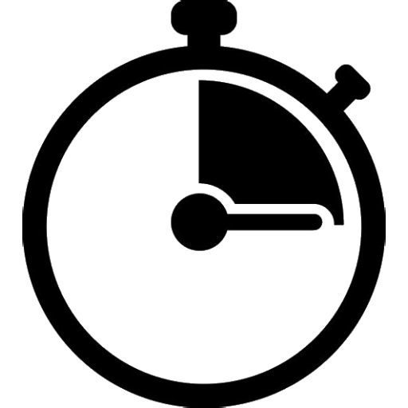

PyMetric#


PyMetric began as the backend for the Pisces project and has grown into a self-contained package. It provides a seamless interface for performing coordinate-dependent operations in Python—ranging from coordinate transformations and differential operations to solving equations of motion. In addition, it offers robust data structures that natively respect and understand underlying coordinate systems and grid architectures, enabling efficient handling of both curvilinear and structured grids.
Installation#
PyMetric is written for Python 3.8+ (with continued support for older versions). For detailed installation instructions and a quick start guide, please see the PyMetric Quickstart Guide page.
Resources#

Getting Started
New to PyMetric? The getting started guide walks you through installing the library,
setting up your first coordinate system, and working with fields on structured grids.
Worked Examples
Explore practical examples that demonstrate how to use PyMetric to define coordinates,
manipulate fields, perform differential operations, and more.
User Guide
Learn how PyMetric is structured under the hood, including coordinate systems, grids, fields, and differential operators. Ideal for in-depth understanding of the core design.
API Reference
Need implementation details? The API reference includes docstrings, type hints, and class hierarchies
for every public-facing component in PyMetric.
Contents#
Getting Started — A quick guide to installation, basic setup, and your first field.
Examples — Real-world use cases showing how to use PyMetric in practice.
User Guide — In-depth explanations of coordinate systems, grids, and field operations.
API Reference — Full class and function documentation with source code links and type hints.
Indices and Tables#
Index – General index of all documented terms
Module Index – Python module index
Search Page – Search the documentation